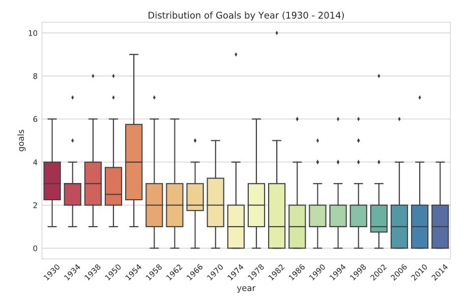

I used the Fifa World Cup dataset from Kaggle
to analyze the trends of goals from 1930 to 2014.
I plotted the charts below using three Python libraries: Matplotlib, Pandas, and Seaborn.
You can see the code here.
The bar chart above shows a downward trend in the average number of goals scored at the World Cup from 1930 to 2014. I used Seaborn to aggregate data to plot the bar chart using the means. The bar chart can quicky show the means and confidence intervals by year. However, this type of chart hides information such as the minimum and maximum numbers as well as the distribution of goals in a certain year. The box plot below can offer such information.
The box plot above shows the distribution of goals scored at the World Cup from 1930
to 2014. The box plot (or a box-and-whisker plot) provides information about the range of the data,
the shape of the distribution of the data, and outliers in the dataset.
- The box shows the interquartile range (the middle 50% or the difference between 75th and 25th percentiles).
- The line in the middle represents the median.
- The end lines represerent the first and third quartiles.
- The diamonds show outliers (data points that differ substantially from other observations and
can skew the distribution of the dataset).